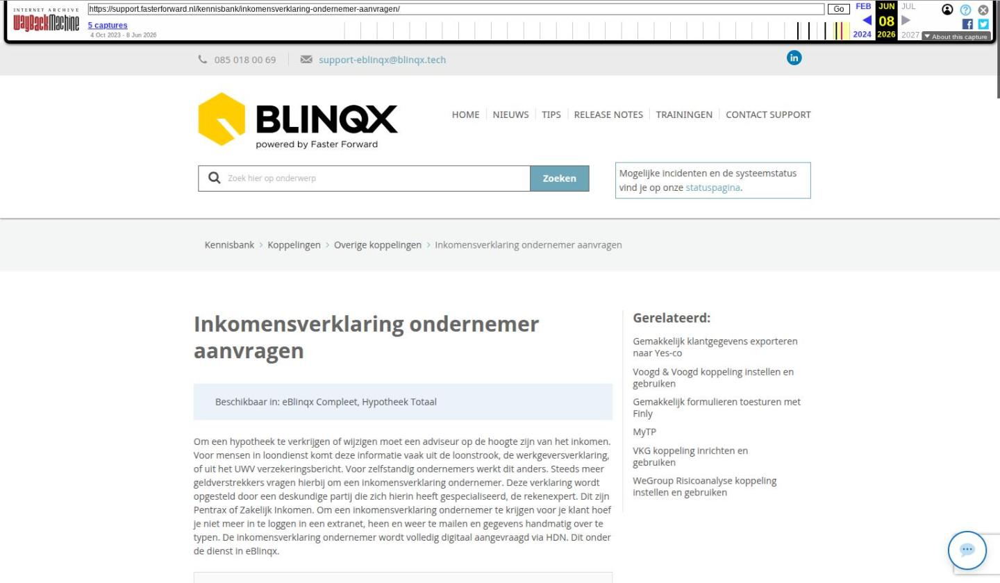

Inkomensverklaring ondernemer aanvragen

Tekstinhoud
Inkomensverklaring ondernemer aanvragen | Support
---
Inkomensverklaring ondernemer aanvragen
Beschikbaar in: eBlinqx Compleet, Hypotheek Totaal
Om een hypotheek te verkrijgen of wijzigen moet een adviseur op de hoogte zijn van het inkomen. Voor mensen in loondienst komt deze informatie vaak uit de loonstrook, de werkgeversverklaring, of uit het UWV verzekeringsbericht. Voor zelfstandig ondernemers werkt dit anders. Steeds meer geldverstrekkers vragen hierbij om een inkomensverklaring ondernemer. Deze verklaring wordt opgesteld door een deskundige partij die zich hierin heeft gespecialiseerd, de rekenexpert. Dit zijn Pentrax of Zakelijk Inkomen. Om een inkomensverklaring ondernemer te krijgen voor je klant hoef je niet meer in te loggen in een extranet, heen en weer te mailen en gegevens handmatig over te typen. De inkomensverklaring ondernemer wordt volledig digitaal aangevraagd via HDN. Dit onder de dienst in eBlinqx.
Zakelijk inkomen inrichten
Inkomensverklaring ondernemer aanvragen
Verstuurde aanvraag en reacties beoordelaar terugzien
Stukken versturen
Inkomensverklaring ontvangen
Taken aangemaakt
Zakelijk inkomen inrichten
Om een zakelijk inkomen aan te kunnen vragen vanuit het klantdossier dien je de juiste rechten te hebben. Anders zie je het tabblad Zakelijk Inkomen niet onder de dienst. Daarnaast moet onder jouw organisatie het TP nummer van Pentrax of Zakelijk inkomen (afhankelijk van de partij die je als beoordelaar kiest) staan. Je gaat hiervoor naar Beheer – Organisatie & Personen. Hier zoek je jouw organisatie op en je gaat naar het tabblad Inventarisatie.
Heb je deze rechten niet en wil je hiervan gebruik maken? Stuur dan een e-mail naar support-eblinqx@blinqx.tech. Let op: alleen beheerders mogen dit verzoek indienen. Geef hierbij aan welke gebruikers deze rechten mogen hebben. En stuur hierbij het TP-nummer van Pentrax of Zakelijk inkomen mee.
Inkomensverklaring ondernemer aanvragen
Voor het aanvragen van het zakelijk inkomen ga je in het klantdossier naar de dienst – tabblad Zakelijk inkomen. Hier klik je op 'Inkomensverklaring ondernemer aanvragen'.
Vervolgens vul je alle velden in.
Als je de aanvrager hebt ingevuld dan verschijnt het veld Organisatie(s). Wanneer de aanvrager aan één organisatie is gekoppeld dan wordt deze automatisch gevuld. Is de aanvrager aan meerdere organisaties gekoppeld dan dien je hier de organisatie te selecteren. De organisaties die getoond worden zijn de organisaties waaraan de aanvrager gekoppeld is. Dit kunnen organisaties in een dossier zijn of organisaties uit Beheer – Organisaties & Personen.
Je kunt meerdere organisaties toevoegen. Dit via de knop 'Organisatie toevoegen'.
Wanneer de velden zijn ingevuld, verschijnen er nieuwe velden. Deze velden hebben betrekking op de organisatie en aanvrager.
Wanneer alle velden correct zijn ingevuld dan kan je klikken op 'Verstuur zakelijk inkomen aanvraag'. De aanvraag wordt dan verstuurd naar de beoordelaar die je hebt geselecteerd.
Onder het tabblad Zakelijk inkomen is een tabel zichtbaar met daarin gegevens over de verstuurde aanvraag.
Let op: het is niet mogelijk om een inkomensverklaring vanuit het dossier van de onderneming aan te vragen. Het tabblad Zakelijk inkomen is zichtbaar, maar je kunt dan geen aanvrager selecteren. De aanvraag dient opgestart te worden vanuit het particuliere dossier van de klant.
Verstuurde aanvraag en reacties beoordelaar terugzien
De verstuurde aanvraag is onder de dienst – tabblad HDN terug te zien. Als reactie op de aanvraag stuurt de beoordelaar via HDN een status (SX bericht) terug. Ook kan de beoordelaar per HDN documenten (DA bericht) opvragen en de inkomensverklaring (OX bericht) opsturen. Deze berichten zijn ook onder dit tabblad te vinden.
Daarnaast zijn de berichten van de beoordelaar terug te vinden in de HDN inbox.
Stukken versturen
Wanneer de beoordelaar documenten nodig heeft om de aanvraag te beoordelen, stuurt deze een documentaanvraagbericht (DA) op. Door dit bericht wordt er een stukkenlijst aangemaakt. Deze is zichtbaar in het klantdossier onder het tabblad Stukkenlijst. Het contract begint met 'Zakelijk inkomen voor', zodat het duidelijk is dat deze stukken horen bij de aanvraag inkomensverklaring ondernemer.
Hier kan je meer lezen over versturen van stukken.
Inkomensverklaring ontvangen
De beoordelaar kan ook een offertebericht toesturen met daarin de inkomensverklaring ondernemer. De inkomensverklaring komt in het klantdossier onder het tabblad Documenten te staan. Wanneer er in de stukkenlijst het stuk inkomensverklaring aanwezig is en hieraan is geen document gekoppeld en deze heeft niet de status 'Akkoord' of 'Aangeleverd' dan wordt het document direct aan het stuk gekoppeld.
Taken aangemaakt
Wanneer je een reactie ontvangt waar je actie op moet ondernemen, zoals een afkeuring of goedkeuring van het bericht, dan wordt er automatisch een taak aangemaakt voor de opgegeven behandelaar in de aanvraag. Berichten waarvoor geen taak wordt aangemaakt, zijn bijvoorbeeld berichten waarin enkel wordt bevestigd dat de maatschappij het bericht heeft ontvangen of berichten die geen verdere actie vereisen. Dit wordt niet geregeld vanuit een workflow, maar dit is in het systeem verwerkt. Onder het product – tabblad HDN kan je zien vanuit welke HDN berichten er automatisch een taak is aangemaakt. Dit is zichtbaar door het taakicoon achter het bericht.
Laatste update: 12 mei 2025
Was deze informatie nuttig?
Ja Nee